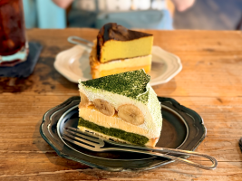
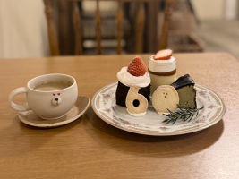
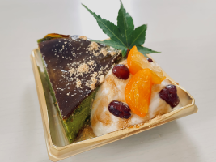

- トップ >
- まっちゃの旅
まっちゃの旅
全国の抹茶スポットをめぐって、カフェ・ケーキ屋・コンビニの抹茶スイーツをレビューします。
カフェレビュー
抹茶ラテや抹茶パフェなど、カフェならではのこだわりの抹茶メニューを紹介します。 店内の雰囲気や香り、抹茶の濃さなどをレビューします。

広島市内にあるカフェに行ってきました。

広島市上安にある「ごはんとおやつのお店 日々」の40周年記念プレートを食べてきました。
ケーキ屋レビュー
抹茶ロールケーキ、抹茶タルト、抹茶ガトーショコラなど、 ケーキ屋ならではの“職人の抹茶スイーツ”をレビューします。

広島市安佐南区長楽寺にある「K.saveur」の舞姫というケーキを購入しました。
コンビニスイーツレビュー
セブン・ローソン・ファミマの新作抹茶スイーツをレビューします。 手軽に買える抹茶スイーツの魅力を紹介します。
コンテンツはまだありません。